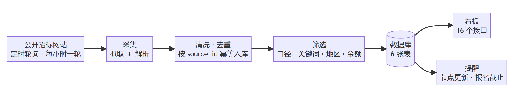

01
业务问题
由一线检索工作发现，非技术侧提出。
01
Project 01 · Live web app · 2026.07
把人工逐个翻查公开招标网站，做成一条自动抓取、解析、筛选、去重与看板提醒的链路；上线后由 2 名检索同事日常使用。
01 / 05
系统每小时整点自动跑；检索同事只看筛出的结果，并在发现列表不对时手动抽查。
人工分 3 段翻查，合计约 3 小时/天整点自动跑 ＋ 人工抽查
01
由一线检索工作发现，非技术侧提出。
02
筛选口径、金额规则、验收标准由本人定义。
03
由扣子云 Web Coding 按需求生成。
04
提需求、跑验证、报问题、定规则；产出 38 个业务文件、7,870 行业务代码。
02 / 05
直连接口，不解析页面；筛选、去重、存储和展示各有明确职责。

Amount extraction
金额提取存在不确定性，因此金额只用于展示；筛选门槛只在预算字段可读时生效。
03 / 05
1 分 43 秒录屏：抓取、筛选、跳转原公告、跟踪看板。
1 分 43 秒 · 原画 1836×936 · 点击播放。
04 / 05
数字按同一轮统计；三个率的分母不同，不互相换算。
分母是全表 100 条，不是抽样；误筛的 14 条主要为服务类与废标公示。
多日抽样结果，不代表全量；用于观察漏标风险。
26 ÷ 31；69 条「金额待确认」不进分母。
口径写在同一页：92% 的分母是全表 100 条，不是抽样；召回 ≈100% 是多日抽样结果；金额准确率的分母只含已确认的 31 条。
05 / 05
读不到预算的行会被直接排除；其中一旦有可投项目，就是漏标。漏标的代价高于多几条待确认。
读得到预算时，按南部 200 万、广州惠州 100 万、其余 900 万过门槛；读不到时标「金额待确认」入库，不按金额拦。取舍是召回优先。
线上现象
处理方式
预算编制类公告被当成可投项目，误筛进看板
服务类关键词剔除，但标题含「施工」保留；结果保留人工复核。
地区字段给的是城市名，匹配失败
补城市到省份映射与归一化。
登录超过有效期后，接口连续返回 401，看板取不到数据
到期前 10 秒用 refresh token 换新；遇到 401 先刷新再重发一次。